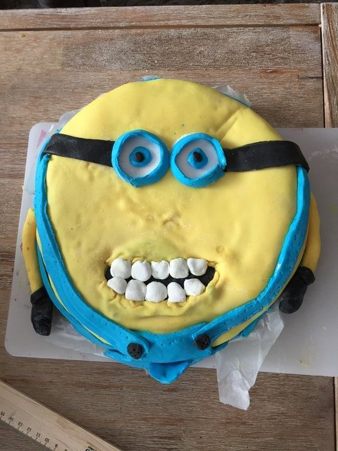
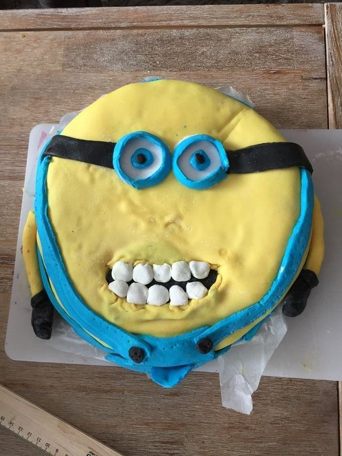

Välkommen till Antons Konditori – en plats där varje bakelse bär på en historia av passion och hantverk. Här på Antons skapar vi inte bara delikatesser, vi skapar minnen.
Våra konditorer, inspirerade av både tradition och kreativitet, arbetar varje dag för att erbjuda dig det allra bästa inom bakverk. Varje ingrediens väljs med omsorg och varje tårta bakas med kärlek.
Vi strävar efter att göra varje besök till en fest för dina sinnen. Njut av doften av nybryggt kaffe när du kliver in genom dörren och låt ögonblicket av att välja bland vårt sortiment av färska bakverk vara en fröjd för ögat.
Utforska vår meny och upptäck allt från klassiska kanelbullar till innovativa tårtkonstverk. Vi är stolta över att erbjuda ett brett utbud av alternativ för att tillfredsställa alla smaker och preferenser.
Hos Antons Konditori är varje kund en vän, och varje smak är en resa genom vårt engagemang för kvalitet och goda smaker. Vi ser fram emot att få dela våra bakverk med dig och skapa smakrika minnen tillsammans!
Vi finns på Företagsgatan 3 i Svedala!
Öppetider:
Måndag - Fredag: 10:00 - 16:00
Lördag och Söndag: 10:00 - 13:30
 
